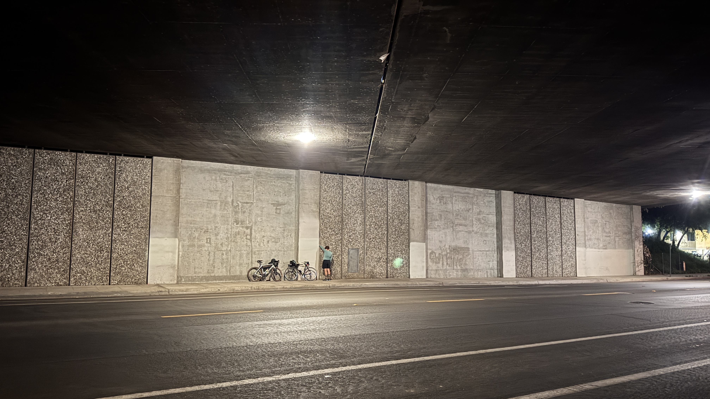
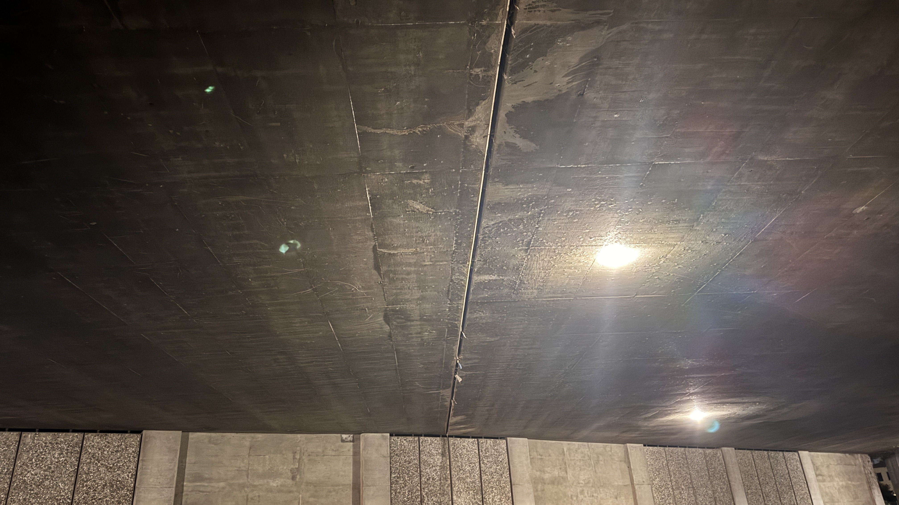
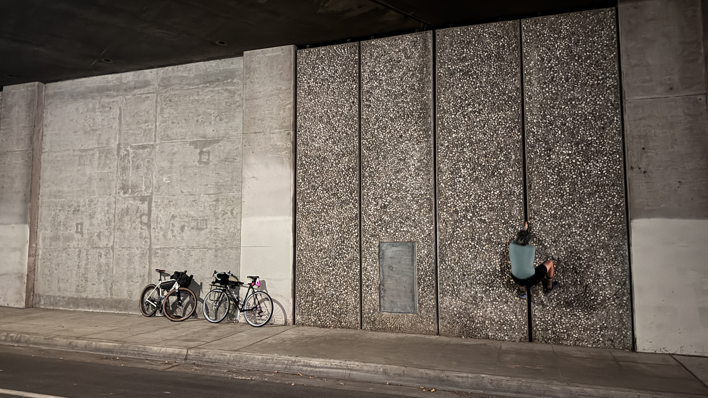
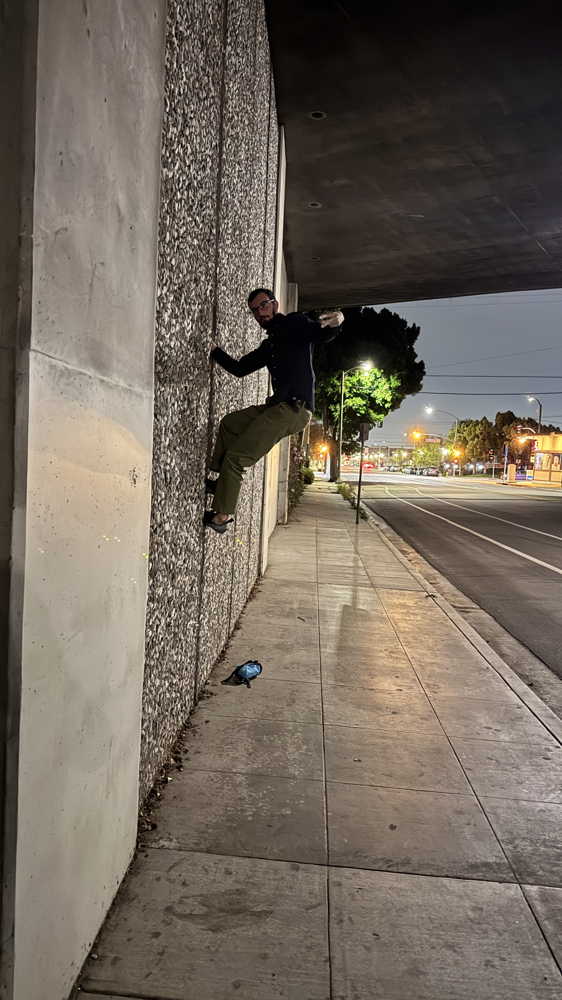
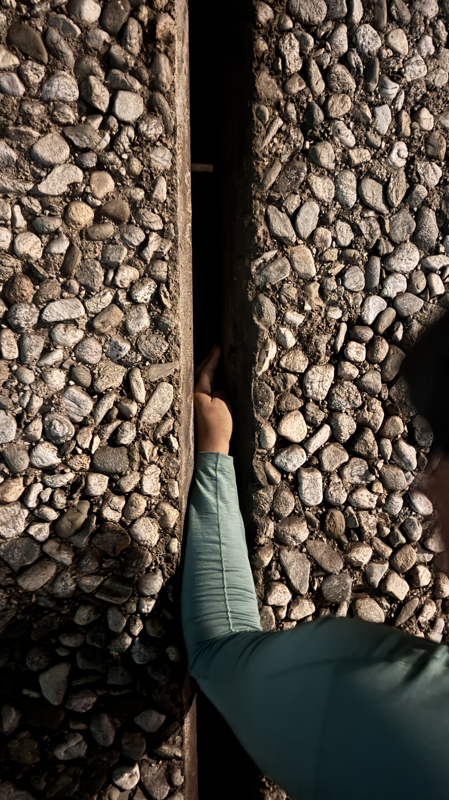

Arcadia Cracks
Some of the best crack climbing once can find in the SGV has to be the tunnels under the 210 freeway of First Ave., Santa Anita Ave., Colorado Blvd., Second Ave., Fifth Ave., and Santa Clara St. You gotta understand that sometimes, civil engineers get the grand idea to make their shit both an art piece and a climbing wall, thus allowing the general public to take full advantage.
The only history we have on climbing here is from Jeff Sewell, saying that he knew people who used to leave slings in the cracks for midnight TRs back around 1980! Some mountain project forum post written by Russ Walling compares the quality of climbing here to Yosemite Valley, which says a lot and we can totally agree to.
Arcadia Cracks Terminology
Since the cracks are situated between panels and are on either side of the road, we use compass orientations like NSEW to dictate which side. Then use sections to dictate which section of panels. Then use crack number to dictate which crack. Counting will go from left to right on the given side.
Example: W Section 3 Crack 4.
Get it?
Over time, we will add more info to this page.
First Avenue
This street has maybe only 1 or 2 good cracks depending on your skill level. Most stuff on either side of the road are too thin to do much with but please keep us posted if you find a way up anything not written about!
Looking at the east wall

Ceiling crack that stretches the entire length over the road

E Section 3 Crack 4
FA: unknown
Great hand crack with tight feet.

E Section 4 Crack 2
FA: unknown
Perfect hand and toe jam crack.

